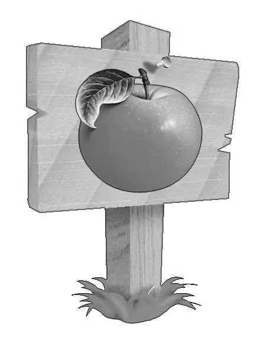
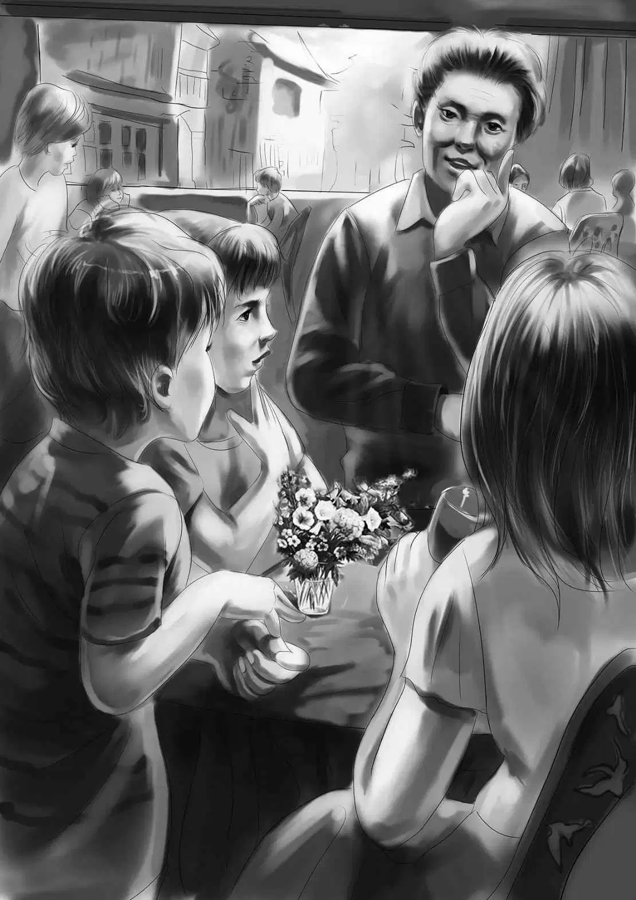
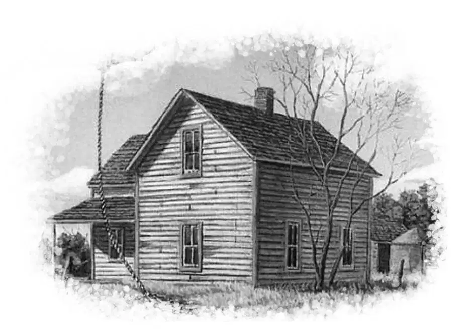

The Aldens found a small restaurant on Main Street. There was a large sign with an apple painted on it.
“The Red Apple,” Benny said. “This place ought to have apple pie, don’t you think?”
The Aldens went in, and the girl showed them to a table for four.
Jessie said, “Let’s have something I can’t cook in the trailer kitchen.”
“Roast lamb and baked potato for me,” Henry said. “You could never roast lamb in our oven. And I am hungry after all the excitement of last night and this day.”
They all agreed on lamb—all but Benny. “No,” he said, “I’ll stick to my hamburgers and peanut butter sandwiches.”
“Benny,” objected Jessie, “why have the same old thing? You can have a change.”
“I don’t like a change,” answered Benny. “I like peanut butter, and for dessert, apple pie and cheese.”
“Well, sandwiches are cheaper,” said Henry.
The food was delicious, and the waitress pleasant. She laughed at Benny with his peanut butter. She said, “I’ve got a young brother like you. He never gets tired of peanut butter and jelly.”
“Oh, I forgot the jelly,” Benny replied. “I’d like that, too.”
As the Aldens were eating, the manager came up to their table and asked if everything was all right.
“Oh, yes,” replied Jessie. She noticed that the manager was an older man and that gave her an idea. “We are curious about that Tower House,” she said. “It is so different from anything else in town. Do you know who lives there and who owns it?”
“Well,” answered the manager, “I don’t remember the Lane family myself, but I think the house is still owned by the Lanes. But then I may be wrong. I think all the Lanes are dead. Miss Mary Smith lives there all alone.”
At the mention of the name Lane, Benny looked up quickly. Could the L on the locket stand for Lane? That surely seemed a good guess.
“Do you remember when Miss Smith moved in?” asked Henry.
“Well, yes and no, you might say,” the manager answered.
“I guess you mean you were too young to remember,” said Benny.
The man laughed. “No, I am not too young. I was right here when suddenly, just like that, Miss Mary Smith lived in the Tower House. She came in the night and nobody saw her move in. When morning came, bang! there she was.”
“You see her around Beachwood?” Jessie asked.
“She comes out once in a while to buy food or to go to the post office. That’s about all. I’d say she just doesn’t like people.”
“That’s funny,” said Benny. “I can’t understand that.”
The manager smiled at Benny and said, “Well, you like everybody. That’s why you can’t understand.”

But Benny did not quite agree. He said, “I think everyone likes people. But some people don’t know that they do.”
“Maybe you are right,” the older man said. “I have an aunt who never smiles, but it is because she is shy.”
“We have a special reason for wanting to talk to Miss Smith,” Henry told the manager. And he explained about the locket with the picture of the Tower House in it.
“And the L must stand for Lane,” Benny added. “You have already helped us.”
“I’m surprised Miss Smith even opened the door,” the man said. “She is a strange person. Now, understand—I don’t know this for a fact—but I think Miss Smith is an artist and paints pictures.”
Benny looked surprised. “Why?” he asked. “Why do you think so?”
“About every month or so, I know that Miss Smith mails a package to New York. I understand it always goes to the same address, which is on one of the avenues where dealers buy and sell paintings.Pictures come through in a special kind of box. I used to work in a city post office, and that’s how I know. Miss Smith uses the same kind of box.”
“Miss Smith may be a painter,” Violet said thoughtfully.
“I don’t know what she paints,” the man said. “She hardly ever goes out. She doesn’t look around her or paint the sea or houses.”
Violet said, “A real artist can paint anything and sell it. A door or a window or an old chair.”
Benny said, “Even a design in a carpet.”
The man laughed. “I suppose you’re right. Anyway if she is an artist, that is probably the way she earns money.”
“Wouldn’t you think she would want people to see her work?” asked Violet. “She sounds so odd.”
The manager went on slowly and his voice was low. “I do hear all sorts of wild stories about Miss Smith. Of course I am not ready to believe them. But I have heard that she keeps a hundred cats in that tower.”
“A hundred cats!” exclaimed Jessie. “I can’t believe that many, but maybe one or two.”
“Or no cats at all,”added the manager. “People like to make up stories about anyone they don’t understand.”
Benny said, “I bet she does keep cats. When she opened the door, we were standing near enough to smell something. It really smelled like the lion house at the zoo. What a smell!”

The manager looked at Benny.“That is the first real proof I have ever heard that there might really be cats at the Tower House. People are often a lot like their pets. Miss Smith is like a cat, very quiet.”
“What makes you say that?” asked Benny.
“When she buys stamps and envelopes, she has a little paper she gives to the clerk, saying how many stamps she wants and what kind. Miss Smith doesn’t have to say a word. She pays for them and goes out. She always seems to have money.”
“But I should think she would be interested in a locket that has a picture of her own house,” Benny said. He felt there was a puzzle here he should be able to solve. “Would you like to see the locket?”
“Indeed I would,” said the man. He held the locket and then opened it carefully.
“Well,” he said in surprise. “You didn’t tell me there was a picture of a cat inside. I am sure that this cat must have died long ago. But probably Miss Smith has a young cat a lot like this. Who knows?” He laughed.
Benny put the locket back in his pocket.
Henry said, “I guess we’ll have to think what to do next. You have helped us a lot. Now we have some idea of what Miss Smith does to keep busy.”
Jessie said, “Let’s go back to the beach. We’ve done enough today.”
On the way back to the trailer, Benny said, “I can’t wait to tell Mr. Lee what we have learned so far.”
“I wonder if we’ll see anyone walking on the beach at midnight,” said Henry.
Violet said, “I hope not!”
Benny really meant to wake up during the night. He wanted to see if anyone would be on the beach at midnight. But he swam so much that he slept very soundly. Nothing as quiet as footsteps in the sand could waken him. Henry never stirred, and neither did Jessie or Violet.
Early in the morning, however, the Aldens were outside, having breakfast as usual. The kettle was boiling, and Mr. Lee’s special chair and cup were ready.
“He’s late,” Benny said.
“Not yet,” replied Henry. “But we ought to see him in the distance.”
Then he came, walking along with Richard and carrying his metal-finder.He did not stop often because he wanted to see the Aldens as much as they wanted to see him. He walked faster and was soon near enough to speak.
“How did you get along in town?” he called.
“Quite well,” said Jessie, pouring the hot tea.
“You are spoiling me,”said the old gentleman. “When you go home, I shall miss my extra breakfast. Do tell me what you did.”
One by one, the Aldens told about Miss Smith’s closing the door in their faces, about the Red Apple, the manager’s ideas, and the cats.
Mr. Lee nodded. “The manager is right about the cat in the picture. It can’t be living now. But it was surely a beautiful cat.”
“We’re going to see if we can find out more about Miss Smith,” Benny said. “I still wonder why she didn’t even want to see the locket.”
“Mr. Lee, what did you do while we were gone?” asked Jessie.
“Oh, I was going to tell you,” he said, fishing in his pocket. He took out a very large coin. “I found this buried two feet down, right in front of the biggest cottage. It is a very old coin and I should think valuable.”
The Aldens looked at the old coin. “Think how long this has been lost!” exclaimed Jessie.
“Yes,” said Mr. Lee. “It may have been lost way up under the cottage long before there was a house there. It probably worked its way downhill. I have marked the place. I shall dig deeper there this winter and may find other things. There is no one around to bother me when the weather is cold.”
“Someone at the cottage didn’t lose that coin?” asked Violet.
“No, I’m sure not. They have been here only a week, and the coin was buried deep. It was lost a long time ago. Once I found a 1937 buffalo nickel. That is a very special coin, too. And yesterday I found a Boy Scout pin. It belonged to the boy in the house next to mine. That was the best part of my day—to see his face when I gave him his pin.”
The Aldens couldn’t help but notice that the best part of Mr. Lee’s adventure had been finding the Boy Scout pin, not the valuable coin.